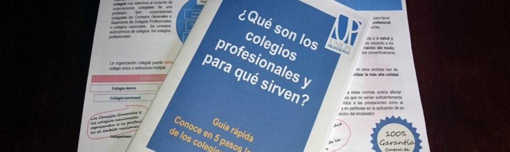

¿Quiénes somos?

El Colegio de técnicos Superiores informáticos del País Vasco “CTSPV”. Es una corporación de
derecho público que agrupa a los Técnicos Superiores en Informática del País Vasco, los
representa, los organiza, los protege, los ayuda a formarse y mejorar, y vela por un ejercicio
adecuado de la profesión.
Su finalidad es atender las necesidades de los Técnicos Superiores en Informática, tanto en el
terreno institucional o jurídico como en el de la mejora profesional y humana. También pretende
prestar un servicio a la sociedad velando por la calidad y profesionalidad en el ejercicio de
nuestro trabajo y promoviendo el respeto de la deontología profesional.
¿Eres Técnico Superior en informática y aún no estás colegiado? Solicita la colegiación
rellenando nuestro formulario online.
Entre todos los miembr/os de la Junta de Gobierno coordinamos los servicios que el Colegio presta
a colegiados y profesionales y podéis contactar con nosotros para cualquier tema.
Nuestra sede está en Bilbao y podéis consultar en contáctanos nuestros datos de
contacto
completos.
¿Por qué un colegio? Yo estoy en contra de los colegios profesionales.

Ante esto, sin entrar en otros debates, se pueden aducir algunos hechos:
Los Colegios Profesionales representan a los profesionales en todos los ámbitos y, por tanto,
como Técnicos Superiores en informática todos debemos tomar conciencia de que el Colegio
Profesional es, hoy en día, una organización necesaria.
Según la Ley española, el ejercicio de una profesión está regulado por los Colegios
Profesionales. Sin un Colegio Profesional, la ley ni siquiera reconocería que nuestra profesión
existe, algo que creemos es perjudicial no sólo para nosotros como Técnicos Superiores en
informática, sino para la sociedad en su conjunto.
¿Merece la pena pagar la cuota?
Los servicios que presta el Colegio (listas de peritajes, actividades de formación, etc.)
beneficiarán más a unos colegiados que a otros en cada momento pero, dado lo reducido de las
cuotas, creemos que sí. En cualquier caso, el Colegio es necesario para impulsar y defender a
la profesión de manera global.